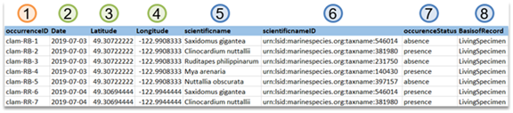
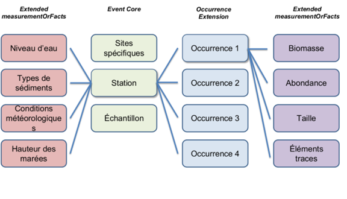

Annexes
Données de biodiversité et définition des termes
Depuis janvier 2021, l’OGSL a choisi d’adhérer à la structure d’archivage du Darwin Core tel que proposé par OBIS (_Ocean Biodiversity Information System). Il s’agit d’une structure de données soumise pour validation à la communauté scientifique océanographique et est donc révisée par les pairs. Cette annexe a pour objectif de fournir de l’information sur le format Darwin Core, l’application du format Darwin Core pour le partage de données avec l’OGSL n’est pas requise. L’OGSL ayant développé une expertise et des outils facilitant la transformation des données. Cette section a pour objectif de vous familiariser avec le format normalisé et standardisé utilisé._
La structure de format Darwin Core se base sur les principes des noyaux d'événements (Event Core), auxquels s’associent des tables d’occurrences (Occurrence Extension) et éventuellement des mesures étendues (Extended Measurements or Facts) tirées des occurrences et des événements (Occurrence et Event EMoF). Des identifiants uniques (eventID, occurrenceID, measurementID) permettent de relier ces tables.
Table des événements (Event Core)
- La table des événements est une partie de la structure de données Darwin Core, comprise dans un tableur (fichier .xlsx, par exemple) distinct, qui contient des informations sur les événements de collecte ou d'observation associés à des spécimens ou des occurrences;
- Cette table permet de documenter les détails contextuels entourant la collecte ou l'observation d'espèces, ce qui est crucial pour la compréhension, l'interprétation et la comparaison des données de biodiversité.
Une table d’événements nous informe donc sur les lieux et le moment où ont été réalisées des observations de spécimens et où des mesures abiotiques ont été saisies pour caractériser les environnements où les observations ont eu lieu. Parmi les variables essentielles, il y a :
- La date et l'heure (minimalement, l'année);
- Les coordonnées géographiques;
- Le système de références des coordonnées géographiques;
- Une brève description du protocole d'échantillonnage (quelques mots suffisent).
Table des occurrences (Occurrence Extension)
- La table des occurrences est une autre partie de la structure de données Darwin Core, aussi comprise dans un tableur distinct, qui permet d’indiquer quels spécimens ont été observés et leur abondance lors des différents événements;
- Elle constitue en quelque sorte un inventaire de la biodiversité observée (ou non observée) en fonction des événements.
Les variables à inclure sont :
- Le nom scientifique des espèces observées;
- Le statut d'occurrence;
- Le "BasisOfRecord".
Structure de table d’occurrence
Lorsque des données de biodiversité sont prélevées, comme un inventaire, il est requis de créer un tableur spécifiquement dédié à marquer les observations, c’est-à-dire les occurrences.

Structure minimale d’une structure d’archivage répondant aux normes du Darwin Core.
Table des mesures prises sur les occurrences (Occurrence EMoF)
- La table des mesures prises sur les occurrences est un fichier d’extension associé à la table des occurrences;
- Elle permet d'enregistrer des mesures spécifiques, telles que la longueur, le poids, le sexe, etc., qui sont associées à des occurrences individuelles d'espèces;
- Chaque enregistrement dans la table des mesures prises sur les occurrences est lié à une occurrence spécifique et contient des informations sur la mesure effectuée, ainsi que d'autres métadonnées pertinentes telles que la méthode de mesure, l'unité de mesure, etc.;
- Cette table complète les données sur les occurrences en fournissant des détails quantitatifs ou qualitatifs supplémentaires sur chaque spécimen, ce qui permet une analyse plus approfondie de la biodiversité à partir des données collectées sur le terrain ou dans d'autres contextes de collecte.
Dans la figure ci-dessous, il y a un quatrième tableau qui correspond aux mesures étendues prises sur les événements. Néanmoins, le présent guide ne s’intéressera pas à ce tableau. Les mesures physico-chimiques prises lors des événements (Event EMoF), comme la température de l’eau, la qualification du substrat marin, le niveau de l’eau, etc. peuvent être intégrées directement dans le tableau des événements (Event Core).

Tableaux relationnels du Darwin Core.
Identifiants uniques
Dans un premier temps, il est important de noter que chaque ligne d’un fichier de données doit avoir son propre identifiant unique. Il existe différentes appellations pour la variable qui se réfère à l’identifiant unique. OBIS et le Darwin Core en définissent plusieurs types, mais ceux auxquels le guide s’intéresse sont les suivants :
- event
- occurrence
- measurement
eventID
- L'eventID fait référence à un événement particulier, comme une observation ou une collecte sur le terrain;
- Cet identifiant est attribué à un ensemble d'occurrences qui ont été collectées simultanément lors d'une même opération de terrain;
- Par exemple, lors d'un inventaire de plantes herbacées par quadrat, chaque quadrat pourrait avoir son propre eventID. Chaque occurrence, chaque espèce observée dans un même quadrat partagerait donc cet eventID.
occurrenceID
- L'occurrenceID est un identifiant unique attribué à chaque occurrence;
- Il permet de suivre et de référencer chaque observation distincte faite lors d'un événement (event);
- Par exemple, si dix spécimens de la même espèce sont observés lors d'une même expédition (event), une ligne contenant les variables obligatoires et le nombre de spécimens observés (10) sera noté dans le tableur et un occurrenceID unique sera attribué à cette observation.
measurementID
- Le measurementID est utilisé pour identifier de manière unique chaque mesure ou observation associée à une occurrence.
- Il est généralement utilisé dans le contexte des données associées à des mesures spécifiques, telles que la longueur d'un spécimen, son poids, etc.
- Par exemple, si plusieurs mesures sont prises sur un spécimen (comme la longueur, la largeur, etc.), chaque mesure pourrait être identifiée individuellement par un measurementID unique.
Essentiellement, lorsqu’on construit une table d’occurrences à partir d’une table d’événements, on cherche à indiquer, par cette structure, quelles observations de spécimen ont été faites lors d’un événement en particulier. Le même principe s'applique à la table de mesures sur les occurrences ou les événements. Ainsi, on regroupe chaque mesure à une occurrence et chaque occurrence à un événement grâce aux identifiants.
Comment construire un identifiant unique:
Il faut d’abord savoir que chaque identifiant doit être globalement unique, c’est-à-dire qu'il ne doit exister dans aucune autre base de données ailleurs dans le monde. Plus on ajoute d’informations à l’identifiant unique, plus on s’approche de cet objectif théorique de le rendre globalement unique. Pour créer un identifiant unique à l'événement, il est donc possible de reprendre des informations déjà contenues dans le tableur : le numéro du quadrat, une abréviation du nom du site, l’année où l’observation a été réalisée, etc. On peut aussi y ajouter des informations comme le nom de l’organisation qui a fait la récolte de la donnée ainsi que d’autres informations spécifiques qui pourraient donner à l’identifiant son aspect véritablement unique. Par la suite, pour créer un identifiant d'occurrence, on peut simplement y ajouter un code ou une abréviation référant à l'espèce observée. Par la même logique, on peut ensuite y joindre une abréviation de la mesure afin de créer un identifiant de mesure.
Le statut d’occurrence
La variable occurrenceStatus fait référence à l'état de présence ou d'absence d'un organisme dans un lieu et à un moment donné. Cette variable est utilisée pour décrire si un spécimen ou une observation d'une espèce particulière a été observé ou collecté dans un endroit spécifique à un moment donné.
Il n’existe que deux valeurs possibles qui peuvent être mises sous la variable occurrenceStatus : present et absent (sans accent, en anglais). L’OGSL propose des définitions pour chacune des valeurs :
- present : Lorsque le occurrenceStatus est défini comme "présent", cela signifie que l'organisme en question a été observé ou collecté dans la zone d'étude ou à l'emplacement spécifié. La présence peut être confirmée par la détection directe de l'organisme lui-même ou par des méthodes indirectes telles que des enregistrements acoustiques ou des traces d’ADN.
- absent : Lorsque occurrenceStatus est défini comme "absent", cela indique que l'organisme en question n'a pas été observé ou collecté dans la zone d'étude ou à l'emplacement spécifié. Cela peut signifier qu'une recherche exhaustive a été effectuée et qu'aucune trace de l'organisme n'a été trouvée, ou que l'organisme est connu pour être absent de cette zone géographique ou de cet habitat spécifique.
Il est important de noter que la détermination de l'absence d'une espèce peut être influencée par divers facteurs, notamment les techniques de collecte des données, les saisons, les conditions environnementales et la compétence des observateurs. L’absence peut essentiellement signifier deux faits bien distincts : (1) dans un lieu et à un moment donné, le spécimen n’a pas été observé, mais il n’est pas possible de dire qu’il n’existe pas en cet endroit donné; ou (2) le spécimen est absent parce qu’il n’existe pas dans ce lieu donné. Ces deux interprétations peuvent mener à des conclusions complètement différentes.
Par conséquent, il est recommandé de fournir des informations sur les méthodes de collecte des données et sur la fiabilité des observations lors de l'utilisation de la variable occurrenceStatus. En ce sens, si vous constatez l’absence d’un spécimen, notez aussi de quelle absence il est question, car cette information sera pertinente à intégrer parmi les métadonnées.
La variable samplingProtocol, qui doit obligatoirement apparaître dans la table d’événement (Event Core), permet notamment de clarifier la notion d’absence, le cas échéant.
Le « Basis of Record » ou le type de source pour les données enregistrées
Dans le contexte de la norme du Darwin Core, la variable basisOfRecord décrit la nature de l'observation qui a servi de source pour les données enregistrées. Elle fournit des informations sur la manière dont les données ont été obtenues et sur la forme sous laquelle elles sont stockées.
Les valeurs possibles sont normalisées, c’est-à-dire qu’il faut choisir parmi les valeurs définies par le Darwin Core. Les plus utilisées sont généralement PreservedSpecimen, LivingSpecimen et HumanObservation. Les définitions que nous proposons visent à faciliter la détermination de quelle valeur choisir :
PreservedSpecimen : Cette valeur indique que les données ont été collectées à partir d'un spécimen conservé, généralement dans un musée, une collection ou un autre établissement similaire. Les spécimens conservés peuvent inclure des animaux naturalisés, des plantes séchées, des échantillons d'ADN, etc.
Exemple : un inventaire de poissons est réalisé pour un lieu donné. Parmi les poissons, certains sont congelés afin d’y prélever certaines mesures (comme la taille, le sexe, etc.). Dans le tableau des mesures prises sur les spécimens, sous la variable basisOfRecord, il faudra alors noter PreservedSpecimen.
LivingSpecimen : Cette valeur indique que les données ont été collectées à partir d'un spécimen vivant, c'est-à-dire un organisme qui est encore en vie au moment de la collecte des données. Cela peut inclure des observations sur le terrain d'animaux, de plantes ou d'autres organismes vivants.
Exemple : un inventaire de poissons est réalisé pour un lieu donné. Les poissons sont pêchés, comptés et des mesures sont prises. Les poissons sont finalement relâchés à l’eau. Dans les tableaux d’occurrences et des mesures prises sur les spécimens, sous la variable basisOfRecord, il faudra alors noter LivingSpecimen.
HumanObservation : Cette valeur indique que les données ont été collectées par l'observation directe d'un observateur humain. Par exemple, des observations de comportements d'animaux dans la nature, des relevés de terrain effectués par des scientifiques ou des naturalistes amateurs, etc.
Le protocole d’échantillonnage
La variable samplingProtocol doit apparaître dans la table d’événement (Event Core). La table d’événement est utilisée pour enregistrer des informations sur les événements d'échantillonnage ou d'observation, c'est-à-dire les occasions où des échantillons biologiques ont été collectés ou des observations ont été réalisées.

Dans cette table, chaque ligne représente un événement d'échantillonnage ou d'observation distinct. La variable samplingProtocol est utilisée pour enregistrer le protocole ou la méthode spécifique utilisée lors de cet événement pour collecter des échantillons biologiques ou observer des organismes.
Dans le cas où plusieurs protocoles d’échantillonnage ont été appliqués lors d’un même événement, le Darwin Core émet la recommandation de séparer les valeurs avec l’utilisation de l’espace-barre verticale-espace (“ | “).
Ex : Casier à homard | Casier à hormard modifié